Eden Group/Portuguese
O Grupo Eden é uma organização especial de NPCs que oferecem missões voltadas para iniciantes em Ragnarök Online. A maioria das missões são repetíveis e dão experiência de base e classe, ideais para evoluir rapidamente seu personagem. Há também missões que dão "poderosos" equipamentos de acordo com seu nível.
Esta página contém informações detalhadas sobre o Grupo Eden.
No NovaRO, os jogadores podem chegar à sede do Grupo Eden digitando o comando: @go Eden ou @go 36.
Você pode usar o comando @edenquest a qualquer momento para guiá-lo pelas missões do Eden, onde dará indicações sobre o que você deve fazer a seguir.
Registro

Para poder participar das missões, os jogadores devem primeiro se Registrar para ser um membro do grupo.
O registro pode ser feito conversando com a secretária Lime Evenor e selecionando 'Join the Eden Group'. Depois de registrado, o jogador receberá uma Marca do Grupo Eden e poderá interagir com os vários NPCs do quadro de missões localizados no QG do Grupo Eden.
Missões de Equipamentos
As Missões de Equipamento do Grupo Eden estão disponíveis para jogadores do nível 11 até 99. Eles recompensam com um conjunto especial de Equipamento do Grupo Eden, incluindo Chapéu, Armadura, Arma, Capa e Calçado. Esses equipamentos são muito melhores em comparação com equipamentos de nível semelhante, no entanto, eles não têm slot e não podem ser refinados. Independentemente disso, eles podem ser considerados equipamentos de primeira linha para jogadores iniciantes abaixo do nível 100.
Com a chegada do Episódio 16.2 Terra Glória, o grupo Eden recebeu um Update onde foram implementados os equipamentos Paradise, correspondente aos níveis 100, 115, 130, 145 e 160.
Equipamento Paradise
Estes podem ser obtidos com  Paradise Coins, que são obtidas através das missões 100+ no Eden Board.
Paradise Coins, que são obtidas através das missões 100+ no Eden Board.
| Equipamentos Paradise - Nível 100 | ||||
|---|---|---|---|---|
| Imagem | Nome | Preço | Tipo | Descrição |

|
Awaken Paradise Uniform I | 3
|
Armor
Defense: 80 Weight: 0 Required Level: 100 Applicable Jobs: Every Job |
|

|
Awaken Paradise Hat I [1] | 3
|
Headgear
Defense: 10 Location: Upper Weight: 0 Required Level: 100 Applicable Jobs: Every Job |
|

|
Awaken Paradise Manteau I | 3
|
Garment
Defense: 20 Weight: 0 Required Level: 100 Applicable Jobs: Every Job |
|
| 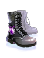 | Awaken Paradise Boots I | 3
|
Footgear
Defense: 22 Weight: 0 Required Level: 100 Applicable Jobs: Every Job |
|

|
Strength Paradise Ring I | 3
|
Accessory
Weight: 0 Required Level: 100 Applicable Jobs: Every Job |
[+ 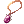 Strength Paradise Necklace I]
[+
[+ Strength Paradise Necklace I]
[+
|

|
Strength Paradise Necklace I | 3
|
Accessory
Weight: 0 Required Level: 100 Applicable Jobs: Every Job |
|

|
Magic Paradise Ring I | 3
|
Accessory
Weight: 0 Required Level: 100 Applicable Jobs: Every Job |
[+
[+
|

|
Magic Paradise Necklace I | 3
|
Accessory
Weight: 0 Required Level: 100 Applicable Jobs: Every Job |
|

|
Agility Paradise Ring I | 3
|
Accessory
Weight: 0 Required Level: 100 Applicable Jobs: Every Job |
[+
[+
|

|
Agility Paradise Necklace I | 3
|
Accessory
Weight: 0 Required Level: 100 Applicable Jobs: Every Job |
|

|
Recovery Paradise Ring I | 3
|
Accessory
Weight: 0 Required Level: 100 Applicable Jobs: Every Job |
[+
[+
|

|
Recovery Paradise Necklace I | 3
|
Accessory
Weight: 0 Required Level: 100 Applicable Jobs: Every Job |
|


| Equipamentos Paradise - Nível 115 | ||||
|---|---|---|---|---|
| Imagem | Nome | Preço | Tipo | Descrição |

|
Awaken Paradise Uniform II | 6
|
Armor
Defense: 85 Weight: 0 Required Level: 115 Applicable Jobs: Every Job |
|

|
Awaken Paradise Boots II | 6
|
Footgear
Defense: 25 Weight: 0 Required Level: 115 Applicable Jobs: Every Job |
|

|
Strength Paradise Ring II | 6
|
Accessory
Weight: 0 Required Level: 115 Applicable Jobs: Every Job |
[+
[+
|

|
Strength Paradise Necklace II | 6
|
Accessory
Weight: 0 Required Level: 115 Applicable Jobs: Every Job |
|

|
Magic Paradise Ring II | 6
|
Accessory
Weight: 0 Required Level: 115 Applicable Jobs: Every Job |
[+
[+
|

|
Magic Paradise Necklace II | 6
|
Accessory
Weight: 0 Required Level: 115 Applicable Jobs: Every Job |
|

|
Agility Paradise Ring II | 6
|
Accessory
Weight: 0 Required Level: 115 Applicable Jobs: Every Job |
[+
[+
|
| 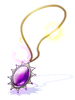 | Agility Paradise Necklace II | 6
|
Accessory
Weight: 0 Required Level: 115 Applicable Jobs: Every Job |
|

|
Recovery Paradise Ring II | 6
|
Accessory
Weight: 0 Required Level: 115 Applicable Jobs: Every Job |
[+
[+
|

|
Recovery Paradise Necklace II | 6
|
Accessory
Weight: 0 Required Level: 115 Applicable Jobs: Every Job |
|


| Equipamentos Paradise - Nível 130 | ||||
|---|---|---|---|---|
| Imagem | Nome | Preço | Tipo | Descrição |

|
Awaken Paradise Uniform III | 9
|
Armor
Defense: 90 Weight: 0 Required Level: 130 Applicable Jobs: Every Job |
|
| 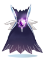 | Awaken Paradise Manteau II | 9
|
Garment
Defense: 25 Weight: 0 Required Level: 130 Applicable Jobs: Every Job |
|

|
Awaken Paradise Boots III | 9
|
Footgear
Defense: 27 Weight: 0 Required Level: 130 Applicable Jobs: Every Job |
|

|
Strength Paradise Ring III | 9
|
Accessory
Weight: 0 Required Level: 130 Applicable Jobs: Every Job |
[+
[+
|

|
Strength Paradise Necklace III | 9
|
Accessory
Weight: 0 Required Level: 130 Applicable Jobs: Every Job |
|

|
Magic Paradise Ring III | 9
|
Accessory
Weight: 0 Required Level: 130 Applicable Jobs: Every Job |
[+
[+
|

|
Magic Paradise Necklace III | 9
|
Accessory
Weight: 0 Required Level: 130 Applicable Jobs: Every Job |
|

|
Agility Paradise Ring III | 9
|
Accessory
Weight: 0 Required Level: 130 Applicable Jobs: Every Job |
[+
[+
|

|
Agility Paradise Necklace III | 9
|
Accessory
Weight: 0 Required Level: 130 Applicable Jobs: Every Job |
|

|
Recovery Paradise Ring III | 9
|
Accessory
Weight: 0 Required Level: 130 Applicable Jobs: Every Job |
[+
[+
|

|
Recovery Paradise Necklace III | 9
|
Accessory
Weight: 0 Required Level: 130 Applicable Jobs: Every Job |
|


| Equipamentos Paradise - Level 145 | ||||
|---|---|---|---|---|
| Imagem | Nome | Preço | Tipo | Descrição |

|
Awaken Paradise Uniform IV | 12
|
Armor
Defense: 100 Weight: 0 Required Level: 145 Applicable Jobs: Every Job |
|

|
Awaken Paradise Boots IV | 12
|
Footgear
Defense: 30 Weight: 0 Required Level: 145 Applicable Jobs: Every Job |
|

|
Strength Paradise Ring IV | 12
|
Accessory
Weight: 0 Required Level: 145 Applicable Jobs: Every Job |
[+
[+
|

|
Strength Paradise Necklace IV | 12
|
Accessory
Weight: 0 Required Level: 145 Applicable Jobs: Every Job |
|

|
Magic Paradise Ring IV | 12
|
Accessory
Weight: 0 Required Level: 145 Applicable Jobs: Every Job |
[+
[+
|

|
Magic Paradise Necklace IV | 12
|
Accessory
Weight: 0 Required Level: 145 Applicable Jobs: Every Job |
|

|
Agility Paradise Ring IV | 12
|
Accessory
Weight: 0 Required Level: 145 Applicable Jobs: Every Job |
[+
[+
|

|
Agility Paradise Necklace IV | 12
|
Accessory
Weight: 0 Required Level: 145 Applicable Jobs: Every Job |
|

|
Recovery Paradise Ring IV | 12
|
Accessory
Weight: 0 Required Level: 145 Applicable Jobs: Every Job |
[+
[+
|

|
Recovery Paradise Necklace IV | 12
|
Accessory
Weight: 0 Required Level: 145 Applicable Jobs: Every Job |
|


| Equipamentos Paradise - Level 160 | ||||
|---|---|---|---|---|
| Imagem | Nome | Preço | Tipo | Descrição |
| Awaken Paradise Hat II [1] | 9
|
Headgear
Defense: 10 Location: Upper Weight: 0 Required Level: 160 Applicable Jobs: Every Job |
| |

|
Awaken Paradise Uniform V | 15
|
Armor
Defense: 100 Weight: 0 Required Level: 160 Applicable Jobs: Every Job |
|
| 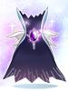 | Awaken Paradise Manteau III | 15
|
Garment
Defense: 30 Weight: 0 Required Level: 160 Applicable Jobs: Every Job |
|

|
Awaken Paradise Boots V | 15
|
Footgear
Defense: 30 Weight: 0 Required Level: 160 Applicable Jobs: Every Job |
|

|
Strength Paradise Ring V | 15
|
Accessory
Weight: 0 Required Level: 160 Applicable Jobs: Every Job |
[+
[+
|
| 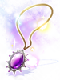 | Strength Paradise Necklace V | 15
|
Accessory
Weight: 0 Required Level: 160 Applicable Jobs: Every Job |
|

|
Magic Paradise Ring V | 15
|
Accessory
Weight: 0 Required Level: 160 Applicable Jobs: Every Job |
[+
[+
|

|
Magic Paradise Necklace V | 15
|
Accessory
Weight: 0 Required Level: 160 Applicable Jobs: Every Job |
|

|
Agility Paradise Ring V | 15
|
Accessory
Weight: 0 Required Level: 160 Applicable Jobs: Every Job |
[+
[+
|

|
Agility Paradise Necklace V | 15
|
Accessory
Weight: 0 Required Level: 160 Applicable Jobs: Every Job |
|

|
Recovery Paradise Ring V | 15
|
Accessory
Weight: 0 Required Level: 160 Applicable Jobs: Every Job |
[+ Recovery Paradise Necklace V]
[+
[+ Recovery Paradise Necklace V]
[+
|

|
Recovery Paradise Necklace V | 15
|
Accessory
Weight: 0 Required Level: 160 Applicable Jobs: Every Job |
|


Encantamentos Paradise 100+
Os anéis e colares podem ser encantados ao custo de 10 Paradise Coins.
É possível escolher entre encantamentos físicos ou mágicos.
É possível colocar 3 encantamentos randômicos nos 2º, 3º e 4º slots.
Equipamentos Inciais (12~99)
As primeiras missões de equipamentos iniciais são dadas pela Instrutora Boya.
Instructor Boya (Level 12 - 60)
Para começar, fale com o NPC e selecione Participate in Training. Dependendo do nível que você estiver, ela o direcionará para um NPC localizado em algum lugar de Midgard.
Quando você encontrar o NPC, eles o instruirão a matar uma certa quantidade de monstros na área. Volte para eles depois que terminar de matar o monstro, e no final eles pedirão que você volte ao Instrutor Boya para reivindicar suas recompensas.
Abaixo está uma lista de NPCs e missões categorizados por nível.
Nível 12-25
| Missão | Monstros | NPC | Recompensa |
|---|---|---|---|
| Destino A Level 12-19 |
 Talking Dog |
||
| Destino B Level 20-25 |
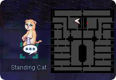 Timid Cat |
*Nota: Não é recomendável fazer essas missões, pois você alcançará facilmente o nível 26 matando normalmente alguns monstros.
Nível 26-39
| Missão | Monstros | NPC | Recompensas |
|---|---|---|---|
| Destino A Level 26-32 |
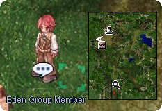 Eden Member - Karl |
||
| Destino B Level 33-39 |
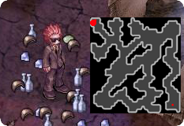 Eden Member - Cloud |
Nível 40-59
| Missão | Monstros | NPC | Recompensas |
|---|---|---|---|
| Destino A Level 40-49 |
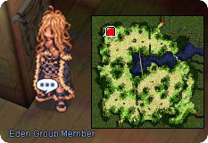 Eden Member - Hooksha |
||
| Destino B Level 50-59 |
- Nota: Você pode chegar facilmente a Hooksha distorcendo o Orc Dungeon e saindo.
Reivindicar Recompensas

Depois de completar cada missão e retornar a Boya, você pode reivindicar a recompensa conversando com o Administrador Michael, localizado no depósito de equipamentos atrás da porta azul. Em algumas profissões, ele solicitará que você escolha a arma que deseja receber.
Se você concluiu a terceira etapa (com o membro do grupo Eden, Hooksha), o Administrador Michael poderá dar um encantamento ao seu Chapéu do Grupo Eden.
Instrutor Ur (Nível 60 - 100)
Quando você atingir o nível 60 e avançar para o seu segunda profissão, o próximo conjunto de missões de equipamentos será dado pelo Instrutor Ur. Para começar, fale com o NPC e aceite participar do programa de treinamento avançado. Dependendo do nível que você estiver, ele o direcionará para um dos poucos NPCs localizados em torno de Midgard.
Este conjunto de missões de equipamentos recompensa com apenas 1 conjunto de equipamentos:
- Eden Group Weapon III
- Eden Group Hat II [1]
- Eden Group Armor
- Eden Group Manteau II
- Eden Group Boots IV
Fazer mais de uma missão permitirá que você encante sua arma. Isso é totalmente opcional e, de fato, é recomendável que você faça apenas uma das missões listadas aqui, pois provavelmente as substituirá por um melhor conjunto de equipamentos quando atingir o nível 120, como os equipamentos da Instância Ghost Palace.
Abaixo estão as instruções para completar as várias missões dadas por Ur.
Nível 60-69
| Missões & Recompensas | NPC |
|---|---|
|
 Dispatched Instructor Romeo 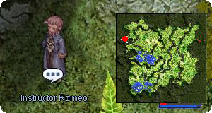 Instructor Romeo |
Nível 70-79
| Missão & Recompensas | NPC |
|---|---|
|
 Dispatched Instructor Johan |
*Nota: Essa missão é a mais recomendada, pois é a mais fácil.
Nível 80-89
| Missões e Recompensas | NPC |
|---|---|
|
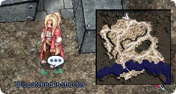 Dispatched Instructor Kiren |
Nível 90-99
| Missões & Recompensas | NPC |
|---|---|
|
 Dispatched Instructor Naomi |
*Nota: Sweet Sauce pode ser comprado no Comodo Chef Assistant e Milk pode ser comprado no Izlude Milk Vendor.
Nível 100+
| Missões& Recompensas | NPC |
|---|---|
|
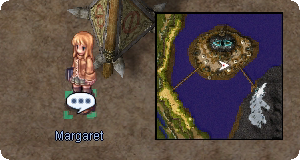 Dispatched Instructor Margaret 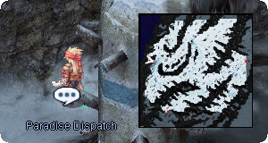 Paradise Dispatch  Paradise Dispatch |
Reinvindicar Recompensas
Depois de completar qualquer uma das missões e retornar a Ur, você pode reivindicar a recompensa conversando com o Blacksmith Toren, localizado no depósito de equipamentos atrás da porta azul. Certifique-se de escolher sua arma com cuidado.
Se você tiver terminado as missões de níveis 70, 80, 90 ou 100 poderá conversar com o Weapons Expert BK (na mesma sala) para aplicar um encantamento à sua arma.
Lista de Armas do Grupo Eden
Ao completar as missões e conversar com o NPC correspondente no armazenamento de equipamentos, você poderá escolher entre uma a três opções de armas, dependendo da classe que você é.
| Instrutora Boya (Level 12 - 59) | |||||
|---|---|---|---|---|---|
| Classe | Arma I (Nível 26) | Arma II (Nível 40) | |||
| Novice(Aprendiz)/Super Novice(Super Aprendiz) | |||||
| Swordman(Espadachim) | |||||
| Acolyte(Noviço) | |||||
| Mage(Mago) | |||||
| Archer(Arqueiro) | |||||
| Thief(Gatuno) | |||||
| Merchant(Mercador) | |||||
| Ninja | |||||
| Gunslinger(Justiceiro) | |||||
| Summoner | |||||
| Instrutor Ur (60 - 100) | |||||
|---|---|---|---|---|---|
| Classe | Arma | ||||
| Super Novice(Super Aprendiz) | |||||
| Knight(Cavaleiro) & Crusader(Templário) |
|||||
| Priest(Sacerdote) | |||||
| Monk(Monge) | |||||
| Wizard(Bruxo) | |||||
| Sage(Sábio) | |||||
| Hunter(Caçador) | |||||
| Bard(Bardo) | |||||
| Dancer(Odalisca) | |||||
| Assassin(Mercenário) | |||||
| Rogue(Arruaceiro) | |||||
| Blacksmith(Ferreiro) & Alchemist(Alquimista) |
|||||
| Star Gladiator(Mestre Taekwon) | |||||
| Soul Linker(Espiritualista) | |||||
| Ninja | |||||
| Gunslinger(Justiceiro) | |||||
| Summoner | |||||
Board Quests
Além dos NPCs que fornecem missões de equipamentos, existem vários painéis de missão colocados ao redor da sede do Grupo Eden. Essas missões recompensam os jogadores com grandes quantidades de EXP por realizar tarefas simples, como caçar monstros ou coletar determinados itens diversos.As placas dos níveis 11 a 85 estão localizadas no primeiro andar da sede do Grupo Eden e as placas dos níveis 86 a 175 estão no segundo andar.
As missões do tabuleiro acima do nível 100 também o recompensarão com 3 Paradise Coins para missões de Caça e 2 Paradise Coins para missões de Coleta de Itens. Essas moedas podem ser trocadas por conjuntos de equipamentos com o Administrator Emil em .
Primeiro Andar
Nível 11 - 26
As missões deste fórum devem ser enviadas a Spike, localizado em frente ao balcão, na sede do Grupo Eden. Você só pode realizar UMA missão por vez.
| Missões de Caça | |||
|---|---|---|---|
| Título | Monstro | Localização | Notas Adicionais |
| Hornet Hunting | 10 Hornets | prt_fild05 | - |
| Condor Hunting | 20 Condors | moc_fild11 moc_fild12 |
- |
| Grasshopper Legs | 20 Rockers | prt_fild07 | Recolha 10 Grasshopper Legs |
| Wormtail Hunting | 20 Wormtail | pay_fild06 pay_fild08 |
- |
| Spore Hunting | 30 Spores | pay_fild08 | - |
| Pest Control | 20 Thief Bug Eggs | prt_sewb1 | Recolha 10 Chrysalis |
| Muka Hunting | 20 Mukas | moc_fild02 | - |
| Familiar Hunting | 20 Familiar | moc_pryd01 | - |
| Collect Feathers | 30 Peco Pecos | moc_fild02 | - |
| Collect Poison Spores | 30 Poison Spores | mjolnir_06 | Recolha 5 Poison Spores |
Nível 27 - 40
As missões deste nível são divididas em três categorias diferentes: Caça, Entrega e Coleta. Cada categoria possui diferentes NPCs correspondentes.
| Missões de Caça | ||
|---|---|---|
| Monstros | Localização | NPC |
| 10 Poison Spore | mjolnir_06 | Sponiac |
| 10 Smokie | mjolnir_06 ayo_fild01 | |
| 10 Elder Willow (Level 30+) | pay_fild09 | |
| 10 Coco (Level 35+) | gef_fild02 pay_fild09 | |
| 10 Thara Frog (Level 38+) | beach_dun3 | |
| Missões de Entrega | ||
|---|---|---|
| Título | NPC Inicial | NPC de Destino |
| Deliver an Insecticide | Dieshin Man |
Zoologist |
| Deliver Honey | Entomologist | |
| Deliver Blanket (Level 35+) | Biologist | |
| Missões de Coleta | ||||
|---|---|---|---|---|
| Título | Item | Monstro | Localização | NPC |
| Gather Bones | 10 Skel-Bones | Skeleton | pay_dun00 | Dashia |
| Soldier Skeleton Archer Skeleton |
pay_dun01 | |||
| Gather Animal Skins | 5 Animal Skins | Bigfoot | pay_fild07 | |
| 10 Bear's Footskins | ||||
| Gather Peelings (Level 30+) |
20 Worm Peelings | Piere Deniro |
anthell01 | |
| 20 Garlets | ||||
| Gather Tails (Level 32+) |
10 Yoyo Tails | Yoyo | ayo_fild01 | |
| 10 Acorns | Coco | |||
| 10 Raccoon Leaves | Smokie | |||
| Gather Cookies (Level 35+) |
5 Well Baked Cookies | Cookie(green) Cookie(Red) |
xmas_dun01 xmas_dun02 | |
| 1 Piece of Cake | Myst Case | |||
| Gather Mustaches (Level 35+) |
5 Mole Whiskers | Martin | mjo_dun02 mjo_dun01 | |
| 3 Mole Claws | ||||
Nota: Você pode coletar os itens para as Missões de coleta antecipadamente, pois não é necessário que você cumpra uma contagem de mortes.
Nível 41 - 55
Todas as missões deste nível são Missões de Caça. Elas devem ser entregues na própria placa assim que você terminar a contagem de mortes.
| Missões de Caça | |
|---|---|
| Monstros | Localização |
| 20 Thara Frogs | beach_dun3 |
| 15 Cruisers | xmas_dun02 |
| 30 Kukres | iz_dun00 |
| 15 Orc Babies | gef_fild10 |
| 20 Orc Warrior | gef_fild10 |
| 15 Vadons | iz_dun01 |
| 30 Megalodons | beach_dun3 |
| 15 Marse | iz_dun02 |
| 20 Cornutus | iz_dun02 |
| 15 Mysts | mjo_dun03 |
| 30 Shellfish | hu_fild06 |
| 15 Marine Spheres | iz_dun03 |
Nível 56 - 70
As missões neste nível têm vários objetivos, incluindo matar certos monstros, reunir alguns de seus itens ou ambos ao mesmo tempo.
| Missões | ||
|---|---|---|
| Missão | Objetivo | Área Recomendada |
| What is this Bandage? | Caçar 30 Mummies e coletar 30 Rotten Bandages | moc_pryd03 |
| Dangerous Alligators | Caçar 30 Alligators | cmd_fild03 |
| That wasn't a Mermaid... | Caçar 30 Mermen | iz_dun04 |
| My Country is Calling Me! | Coletar 10 Fine Sand e 30 Grit dos Sandmen | moc_fild16 |
| Hunt Wild Boar | Caçar 30 Savages | mjo_fild07 |
| Preparing the Summer | Coletar 30 Sticky Webfoot dos Thara Frogs | beach_dun3 |
| A Woman's Grudge | Caçar 30 Sohees | pay_dun03 |
| Special Ingredients | Coletar 40 Huge Leaves dos Leaf Cats ou Wootan Fighters | ayo_dun01 um_fild02 |
| Puppet Master's Agony | Caçar 30 Marionettes e coletar 30 Golden Hairs | gef_dun02 |
| Tiresome Flies | Caçar 30 Hunter Flies | gef_dun00 |
| Dangerous Munak | Caçar 30 Munaks | pay_dun02 |
| Make the World Green | Coletar 40 Maneater Blossoms das Flora | cmd_fild01 cmd_fild03 (Retorne para Sparkle está se referindo ao Quest Board 56 - 70 e selecionando sua missão novamente para ativar o NovaRO) |
| Magic Wand | Coletar 30 Dokebi Horns dos Dokebis e 30 Pieces of Bamboo dos Dumpling Children | pay_dun04 gon_fild01 |
Nível 71 - 85
A partir deste nível, as missões são divididas em categorias com base em sua localização. Todas as missões deste nível são de caça, exceto a última.
| Missões | ||
|---|---|---|
| Área | Objetivo | Mapa Recomendado |
| Sphinx | 10 Requiems | in_sphinx2 |
| 10 Marduks | in_sphinx3 | |
| 10 Pasanas | in_sphinx5 | |
| Glast Heim | 10 Dark Frames | gl_cas01 |
| 10 Evil Druids | gl_church | |
| 10 Wraiths | gl_church | |
| 10 Raydric Archers | gl_step | |
| Juno Area | 20 Grand Pecos | yuno_fild08 |
| 20 Sleepers | yuno_fild02 | |
| 20 Goats | yuno_fild11 | |
| 20 Harpies | yuno_fild04 | |
| Clock Tower | 15 Clocks | c_tower2 |
| 15 Punks | c_tower2 | |
| 15 Ridewords | c_tower1 | |
| Localizado em Ilhas | 15 Uzhas | mosk_dun03 |
| 15 Miyabi Dolls | ama_dun01 | |
| 15 Mi Gaos | lou_fild01 | |
| 15 Headless Mules | bra_fild01 | |
| 15 Tamruans | ayo_dun02 | |
| 30 Festival Masks dos Dumpling Child | gon_fild01 | |
Segundo Andar
Level 86 - 90
As missões desse nível precisam de 3 horas para ser refeitas.
| Missões | ||
|---|---|---|
| Área | Objetivo | Mapa Recomendado |
| Turtle Island | 30 Dragon Tails | tur_dun01 |
| 30 Spring Rabbits | ||
| 30 Pests | ||
| Clock Tower Dungeon | 30 Bathory | alde_dun04 |
| 30 Alarms | c_tower3 | |
| Expansion Towns | 30 Baba Yaga | mosk_dun03 |
| 30 Yao Juns | lou_dun02 | |
| 30 Firelock Soldiers | ama_dun01 | |
| 30 Zipper Bears | gon_dun01 | |
| Other Regions | 30 Ground Petites | gef_fild05 |
| 30 Rafflesia | lhz_fild01 | |
| 30 Venomous | ein_dun01 | |
| 30 Pitmen | ||
| 30 Novus (Yellow) | hu_fild05 | |
Nível 91 - 99
As missões desse nível precisam de 3 horas para ser refeitas.
Além disso, ao enviar essas missões, você recebe a opção de receber recompensas normais (Base e Job EXP) ou Double Job EXP.
| Missões | ||
|---|---|---|
| Área | Objetivo | Mapa Recomendado |
| Turtle Island | 30 Soliders | tur_dun02 |
| 30 Freezers | ||
| 30 Heaters | tur_dun04 | |
| Glast Heim | 30 Injustice | gl_prison |
| 30 Rybios | ||
| 30 Dark Priests | gl_chyard | |
| Rachel/Veins | 30 Stapos | ve_fild07 |
| 30 Roweens | ra_fild12 | |
| 30 Siromas | ice_dun01 | |
| Expansion Cities | 30 Shinobi | ama_dun03 |
| 30 Evil Nymphs | gon_dun03 | |
| Other Regions | 30 Deviruchi | gef_dun03 |
| 30 Minerals | ein_dun02 | |
| 30 Kahos | mag_dun01 | |
| 30 Neraids | beach_dun | |
| 30 Disguises | nif_fild01 | |
Level 100 - 110
As missões desse nível precisam de 1 hora para ser refeitas. Cada uma dessas fornece EXP Base e EXP Job.
| Missões de Caça | ||
|---|---|---|
| Área | Objetivo | Mapa Recomendado |
| Glast Heim | 30 Carats | gl_cas01 |
| 22 Arclouse | gl_dun01 | |
| 30 Anolians | gl_sew04 | |
| 30 Stings | gl_sew03 | |
| 30 Majoruros | gl_dun02 | |
| Ash Vacuum | 30 Pinguicula | spl_fild02 |
| 30 Luciola Vespa | spl_fild03 | |
| Ice Dungeon | 30 Desert Wolves | ra_fild01 |
| 30 Snowier | ice_dun02 | |
| 30 Ice Titans | ice_dun03 | |
| 30 Gazeti | ice_dun03 | |
| Magma Dungeon | 30 Nightmare Terrors | mag_dun02 |
| 30 Deleters | mag_dun02 | |
| 30 Blazzers | mag_dun01 | |
| Malaya Port | 30 Jejelings | ma_fild01 |
| 30 Tiyanak | ma_fild01 | |
| 30 Manananggal | ma_dun01* | |
| 30 Mangkukulam | ma_fild02 | |
| Niflheim | 30 Disguises | nif_fild01 |
| 30 Gibbets | nif_fild02 | |
| 30 Loli Ruri | nif_fild02 | |
| Rachel | Axe Kobold | ra_fild05 |
| 30 Hammer Kobold | ra_fild05 | |
| 30 Mace Kobold | ra_fild05 | |
| 30 Kobold Archer | ra_fild06 | |
| Other Regions | 30 Loli Ruri | nif_fild02 |
| 30 Medusa | beach_dun | |
| 20 Anubis | in_sphinx4 | |
| 30 Magmaring | ve_fild03 | |
| Missões de Coleta | ||
|---|---|---|
| Item | Monstro | Mapa Recomendado |
| 20 Rotten Meat | Roween | ra_fild12 |
| 20 Ectoplasm | Quve Lude |
niflheim |
| 20 Sticky Poison | Muscipular Drosera |
ve_fild03 |
| 20 Blue Hair | Kobolds | ra_fild05 |
*Note: Para acessar o Bangungot Hospital é necessário ter terminado a quest Cautious Village.
Nível 111 - 120
As missões desse nível precisam de 1 hora para ser refeitas. Cada uma dessas fornece EXP Base e EXP Job.
Todas as missões de caça abaixo exigem que você mate 30 dos monstros listados.
| Missões de Caça | ||
|---|---|---|
| Área | Objetivo | Mapa Recomendado |
| Glast Heim | Raydric | gl_knt01, gl_knt02 |
| Khalitzburg | gl_knt02 | |
| Wanderer | gl_cas02 | |
| Thanatos Tower | Ancient Mimic | tha_t02 |
| Death Word | tha_t03 | |
| Owl Baron | tha_t06** | |
| Plasma (Green) | tha_t01 | |
| Plasma (Blue) | tha_t02 | |
| Ash Vacuum | Dark Pinguicula | spl_fild01 |
| Nepenthes | man_fild01 | |
| Naga | spl_fild01 | |
| Centipede Larva | man_fild01 | |
| Cornus | spl_fild01 | |
| Draco | nyd_dun01 | |
| Gefenia | Incubus | gefenia03 |
| Succubus | gefenia02 | |
| Violy | gefenia02, gefenia03 | |
| Juperos | Venatu (Green) | juperos_01 |
| Venatu (Orange) | juperos_01 | |
| Venatu (Blue) | juperos_01 | |
| Byalan Dungeon | Sedora | iz_dun05 |
| Sropho | iz_dun05 | |
| Pot Dofle | iz_dun05 | |
| Kiel Dungeon | Aliza | kh_dun01 |
| Aliot | kh_dun02 | |
| Alicel | kh_dun02 | |
| Outras Regiões | Ancient Mummy | moc_pryd06 |
| Hell Hound | abbey01 | |
| Wakwak | ma_fild01 | |
| Missõe de Coleta | ||
|---|---|---|
| Item | Monstro | Mapa Recomendado |
| 30 Fragments | Venatu Dimik |
juperos_01 |
| 30 Rusty Screws | ||
| 30 Bloody Pages | Death Word | tha_t03 |
| 30 Mystic Horns | Cornus | spl_fild01 |
**Nota: Acessar a Torre Thanatos F3 e superior requer a missão Torre de Thanatos.
Nível 121 - 130
As missões desse nível precisam de 1 hora para ser refeitas. Cada uma dessas fornece EXP Base e EXP Job.
Todas as missões de caça abaixo exigem que você mate 30 dos monstros listados.
| Missões de Caça | ||
|---|---|---|
| Área | Objetivo | Mapa Recomendado |
| Thanatos Tower** | Baroness of Retribution | tha_t07 ~ tha_t12 ** |
| Lady Solace | ||
| Mistress of Shelter | ||
| Dame of Sentinel | ||
| Rachel Shrine | Vanberk | ra_san01 |
| Isilla | ra_san02 | |
| Hodremlin | ra_san03 | |
| Agav | ra_san05 | |
| Echio | ra_san04 | |
| Nameless Island | Ragged Zombie | abbey01 |
| Banshee | abbey01 | |
| Zombie Slaughter | abbey03 | |
| Flame Skull | abbey03 | |
| Abyss Lake Dungeon | Red Ferus | abyss_02 |
| Green Ferus | abyss_01 | |
| Blue Acidus | abyss_02 | |
| Gold Acidus | abyss_03 | |
| Ash Vacuum | Hillslion | man_fild03 |
| Centipede | ||
| Tatacho | ||
| Malaya Port | Bungisngis | ma_fild02 |
| Engkanto | ||
| Other Regions | Apocalypse | juperos_02 |
| Remover | lhz_dun01 | |
| Aqua Elemental | nyd_dun01 | |
| Skogul | odin_tem02 | |
| Frus | ||
| Knocker | thor_v02 | |
| Imp | thor_v01 | |
| Missões de Coleta | ||
|---|---|---|
| Item | Monstro | Mapa Recomendado |
| 30 Fur | Tatacho Hillslion |
man_fild03 |
| 30 Will of the Darkness | Hodremlin Seeker |
ra_san03 |
| 30 Clattering Skulls | Zombie Slaughter Ragged Zombie |
abbey01 |
| 30 Reins | Abysmal Knight | gefenia01 |
**Nota: Acessar a Torre Thanatos F3 ou superior requer a missão Torre de Thanatos.
Nível 131 - 140
As missões desse nível precisam de 1 hora para ser refeitas. Cada uma dessas fornece EXP Base e EXP Job.
Todas as missões de caça abaixo exigem que você mate 30 dos monstros listados.
| Missões de Caça | ||
|---|---|---|
| Área | Objetivo | Mapa Recomendado |
| Dimensional Gorge | Incarnation of Morroc (Shadow) | moc_fild21 |
| Incarnation of Morroc (Angel) | ||
| Incarnation of Morroc (Ghost) | ||
| Incarnation of Morroc (Human) | ||
| Scaraba Hole | One-Horned Scaraba | dic_dun01 |
| Two-Horned Scaraba | ||
| Antler Scaraba | dic_dun02 | |
| Rake Scaraba | ||
| El Dicastes | Bradium Golem | man_fild02 |
| Dolomedes | dic_fild02 | |
| Nightmare Pyramid*** | Nightmare Arclouse | moc_prydn2 |
| Nightmare Mimic | ||
| Nightmare Ancient Mummy | ||
| Thor Volcano | Kasa | thor_v03 |
| Salamander | ||
| Bow Master | ||
| Sword Master | ||
| Biolabs 2 | Egnigem Cenia | lhz_dun02 |
| Wickebine Tres | ||
| Armeyer Dinze | ||
| Errende Ebecee | ||
| Kavach Icarus | ||
| Laurell Weinder | ||
| Nightmare Scaraba Hole**** | Gold One Horn Scaraba | dic_dun03 |
| Gold Two Horn Scaraba | ||
| Gold Antler Scaraba | ||
| Gold Rake Scaraba | ||
| Missões de Coleta | ||
|---|---|---|
| Item | Monstro | Mapa Recomendado |
| 35 Fluorescent Liquid | Aqua Elemental | nyd_dun01 |
| 35 Torn Magic Book | Necromancer | abbey03 |
| 35 Crystal of Darkness | Incarnations of Morroc | moc_fild21 |
| 35 Golden Feather | Miming | bif_fild01 |
**Nota: Para acessar o Dimensional Gorge é necessário terminar a quest Continental Guard.
***Nota: Para entrar na Nightmare Pyramid, converse com o Suspicious Cat em e pague 5000z.
****Nota: Acessar Nightmare Scaraba Hole requer que você tenha a quest Doha's Secret Orders até o passo 7. Além disso, os inimigos nesta área são considerados extremamente difíceis para este nível, portanto, missões desta área NÃO são RECOMENDADAS.
Nível 141 - 175
Hunting Missions
| Bifrost Forest | ||
|---|---|---|
| Monstro | Quantidade | Mapa Recomendado |
| Angra Mantis | 20 | Hazy Forest (Instance) |
| Pom Spider | ||
| Parus | ||
| Little Fatum | Bifrost Bridge (Town>Mora>Exit) | |
| Petal | Blooming Flower Land (Dungeon>Bifrost Tower>Exit) | |
| Menblatt | ||
| Bifrost Tower | ||
|---|---|---|
| Monstro | Quantidade | Mapa Recomendado |
| Blue Lichtern | 20 | Bifrost Tower F1 |
| Yellow Lichtern | ||
| Red Lichtern | Bifrost Tower F2 | |
| Antique Book | ||
| Cenere | ||
| Green Lichtern | Bifrost Tower F3 | |
| Nidhoggur's Nest | ||
|---|---|---|
| Nome | Quantidade | Mapa Recomendado |
| Ancient Tree | 10 | Nydhoggur's Nest F1 (Instance) |
| Dark Shadow | Nydhoggur's Nest F2 (Instance) | |
| Glastheim Nightmare | ||
|---|---|---|
| Monstro | Quantidade | Mapa Recomendado |
| Cursed Book | 20 | Nightmare Glast Heim |
| Cursed Box | ||
| Nightmare Wanderer | ||
| Clock Tower Nightmare | ||
|---|---|---|
| Monstro | Quantidade | Mapa Recomendado |
| Big Ben | 20 | Nightmare Clock Tower F2 (Dungeons>Clock Tower)
Hero of Time (NPC)
|
| Neo Punk | ||
| Big Bell | Nightmare Clock Tower F3 | |
| Bio Labs F3 | ||
|---|---|---|
| Monstro | Quantidade | Mapa Recomendado |
| Seyren Windsor | 10 | Biolab F3 (Dungeons>Bio Lab) |
| Eremes Guile | ||
| Howard Alt-Eise | ||
| Margaretha Sorin | ||
| Cecil Damon | ||
| Kathryne Keyron | ||
| Bio Labs F4 | ||
|---|---|---|
| Monstro | Quantidade | Mapa Recomendado |
| Randel Lawrence | 10 | Biolab F4 (Dungeons>Bio Lab) |
| Flamel Emure | ||
| Celia Alde | ||
| Chen Lio | ||
| Gertie | ||
| Alphoccio | ||
| Trentini | ||
Gathering Missions
Certifique-se de levar as Missões de Caça junto com essas missões.
| Item | Quantidade | Monstro Recomendado |
|---|---|---|
| Bookclip in Memory | 40 | Antique Book |
| Angel Magic Powder | Little Fatum | |
| Round Feather | Parus | |
| Fancy Fairy Wing | Menblatt | |
| Unripe Acorn | Petal | |
| Dark Piece | Dark Shadow | |
| Handcuffs | Biolab F3 | |
| Research Chart | Biolab F4 |
Missões do Dojô
Fora as Board Quests, ainda existem missões no Dojo do Grupo Eden. Essas missões são oferecidas pelos membros da Expedição de Midgard e podem ser feitas em conjunto com as outras missões do Eden. O que é altamente recomendável, já que, elas são, normalmente, idênticas.

Nível 100~110
Para poder receber as missões é necessário fazer uma mini quest.
1. Fale com Gelkah localizada dentro do primeiro quarto à esquerda, atrás da porta de acesso azul.
2. Ela vai pedir para você trazer 50x Brigan. Quando trazer os itens de volta, ela o recompensará com um Courtesy Ticket.
Brigan. Quando trazer os itens de volta, ela o recompensará com um Courtesy Ticket.
3. Fale com Rohtert .
4. Gelkhah oferecerá várias missões de caça. (Você pode fazer quantas missões quiser, conversando com Gelkah e todas são repetíveis individualmente após um intervalo de 1 hora.)
5. Volte para Gelkhah e selecione a missão completa para receber a recompensa.
| Missões de Caça | |||||
|---|---|---|---|---|---|
| Área | Monstro | Contagem | EXP Base | EXP Job | Mapa Recomendado |
| Glast Heim | Carat | 30 | 13.750.000 | 3.700.000 | gl_cas01 |
| Arclouse | 22 | 13.750.000 | 3.700.000 | gl_dun01 | |
| Anolian | 30 | 13.750.000 | 4.662.500 | gl_sew04 | |
| Sting | 30 | 13.750.000 | 4.662.500 | gl_sew03 | |
| Majorous | 30 | 13.750.000 | 6.300.000 | gl_dun02 | |
| Ash Vacuum | Pinguicula | 30 | 13.750.000 | 3.700.000 | spl_fild02 |
| Luciola Vespa | 30 | 13.750.000 | 4.662.500 | spl_fild03 | |
| Ice Dungeon | Desert Wolf | 30 | 13.750.000 | 3.700.000 | ra_fild01 |
| Ice Titan | 30 | 13.750.000 | 4.662.500 | ice_dun03 | |
| Snowier | 30 | 13.750.000 | 3.700.000 | ice_dun02 | |
| Magma Dungeon | Nightmare Terror | 30 | 13.750.000 | 3.700.000 | mag_dun02 |
| Deleter (Sky) | 30 | 13.750.000 | 3.700.000 | mag_dun02 | |
| Outras Áreas | Loli Ruri | 30 | 13.750.000 | 4.662.500 | nif_fild02 |
| Medusa | 30 | 13.750.000 | 3.700.000 | beach_dun01 | |
| Anubis | 20 | 13.750.000 | 4.662.500 | in_sphinx4 | |
Nível 111~120
1. Fale com Mingmin , localizada dentro da primeira sala à esquerda, atrás da porta de acesso azul localizada no canto nordeste do Grupo Eden.
2. Você precisará falar com ela várias vezes e concordar em assinar um contrato antes que as missões de caça possam ser desbloqueadas.
3. Mingmin então oferecerá várias missões de caça ou de coleta de itens. Você pode fazer quantas missões quiser e todas elas podem ser repetidas individualmente após um intervalo de 1 hora.
4. Volte para Mingmin e selecione a missão completa para receber a recompensa.
| Missões de Caça | |||||
|---|---|---|---|---|---|
| Área | Monstro | Contagem | EXP Base | EXP Job | Mapa Recomendado |
| Glast Heim | Raydric | 30 | 7.500.000 | 5.000.000 | gl_knt01 |
| Khalitzburg | 30 | 7.500.000 | 5.000.000 | gl_knt02 | |
| Wanderer | 30 | 7.500.000 | 5.000.000 | gl_cas02 | |
| Thanatos Tower | Ancient Mimic | 30 | 10.000.000 | 7.500.000 | tha_t02 |
| Death Word | 30 | 10.000.000 | 7.500.000 | tha_t03 | |
| Owl Baron | 30 | 10.000.000 | 7.500.000 | tha_t06 | |
 Bloody Page Bloody Page |
20 | 10.000.000 | 7.500.000 | - | |
| Ash Vacuum | Dark Pinguicula | 30 | 280.000 | 180.000 | spl_fild01 |
| Nephenthes | 30 | 280.000 | 180.000 | man_fild01 | |
| Naga | 30 | 280.000 | 180.000 | spl_fild01 | |
| Centipede Larva | 20 | 280.000 | 180.000 | man_fild01 | |
| Cornus | 30 | 280.000 | 180.000 | spl_fild01 | |
| Mystic Horn | 20 | 280.000 | 180.000 | - | |
| Pyramid | Ancient Mummy | 30 | 300.000 | 200.000 | moc_pryd06 |
| Geffenia | Incubus | 10 | 300.000 | 200.00 | geffenia01 geffenia02 geffenia03 |
| Succubus | 10 | ||||
| Violy | 10 | ||||
| Juperos | Venatu (Green) | 30 | 400.000 | 300.000 | juperos_01 |
| Venatu (Orange) | 30 | ||||
| Venatu (Blue) | 30 | ||||
| 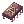 Fragment | 10 | 300.000 | 200.000 | ||
 Rusty Screw Rusty Screw |
20 | ||||
Nível 121~130
Missões de Caça
1. Na sede do Grupo Eden, passe pelo portal na porta azul no primeiro andar (térreo) .
2. Vá ao Dojô pelo portal da esquerda.
3. Primeiro converse com Aigu e depois converse com Melody Jack .
4. Melody Jack lhe dá as missões de caça.
| Missões de Caça | |||||
|---|---|---|---|---|---|
| Área | Monstro | Contagem | EXP Base | EXP Job | Mapa Recomendado |
| Thanatos Tower | Baroness of Retribution | 30 | 22.5kk | 5kk | tha_t08 |
| Lady Solace | 30 | 22.5kk | 5kk | tha_t09 | |
| Mistress of Shelter | 30 | 22.5kk | 5kk | tha_t11 | |
| Dame of Sentinel | 30 | 22.5kk | 5kk | tha_t12 | |
| Rachel Shrine | Vanberk | 20 | 22.5kk | 5kk | ra_san01 |
| Isilla | 20 | ra_san02 | |||
| Hodremlin | 30 | 22.5kk | 5kk | ra_san03 | |
| Agav | 20 | 22.5kk | 5kk | ra_san05 | |
| Echio | 20 | ra_san04 | |||
| Nameless Island | Ragged Zombie | 30 | 22.5kk | 5kk | abbey02 |
| Banshee | 30 | 22.5kk | 5kk | abbey01 | |
| Zombie Slaughter | 30 | 22.5kk | 5kk | abbey02 | |
| Abyss Lake | Ferus (Red) | 30 | 22.5kk | 5kk | abyss_02 |
| Ferus (Green) | 30 | abyss_01 | |||
| Acidus (Blue) | 30 | 22.5kk | 5kk | abyss_02 | |
| Acidus (Gold) | 30 | abyss_03 | |||
Missões de Exploração
4. Aigu lhe dá as missões de Exploração.
| Missões de Caça | |||
|---|---|---|---|
| Área | Local | EXP Base | EXP Job |
| Abyss Lake | 22.5kk | 5kk | |
| Rachel Sanctuary | spot 3 |
25kk | 7.5kk |
| Nameless Island | spot 8 |
22.5kk | 7.5kk |
| Thanatos Tower | Na escada que liga os sétimo e oitavo andares | 31.25kk | 7.5kk |
Nível 131~140
Fale com Ragi
| Missões de Caça | |||||
|---|---|---|---|---|---|
| Área | Monstro | Contagem | EXP Base | EXP Job | Mapa Recomendado |
| Dimensional Gorge | Incarnation of Morocc (Angel) | 30 | 27.5kk | 5kk | moc_fild22 |
| Incarnation of Morocc (Golem) | 30 | 27.5kk | 5kk | ||
| Incarnation of Morocc (Spirit) | 30 | 27.5kk | 5kk | ||
| Scaraba Hall | Uni-Horn Scaraba | 30 | 27.5kk | 7.5kk | dic_dun01 |
| Two-Horn Scaraba | 30 | 27.5kk | 5kk | ||
| Antler Scaraba | 30 | 27.5kk | 5kk | dic_dun02 | |
| Rake Scaraba | 30 | 27.5kk | 5kk | ||
| Somatology Laboratory | Wickebine Tres | 30 | 27.5kk | 5kk | lhz_dun02 |
| Errende Ebecee | 30 | 27.5kk | 5kk | ||
| Laurell Weinder | 30 | 27.5kk | 5kk | ||
| Armeyer Dinze | 30 | 27.5kk | 5kk | ||
| Egnigem Cenia | 30 | 27.5kk | 5kk | ||
| Kavach Icarus | 30 | 27.5kk | 5kk | ||